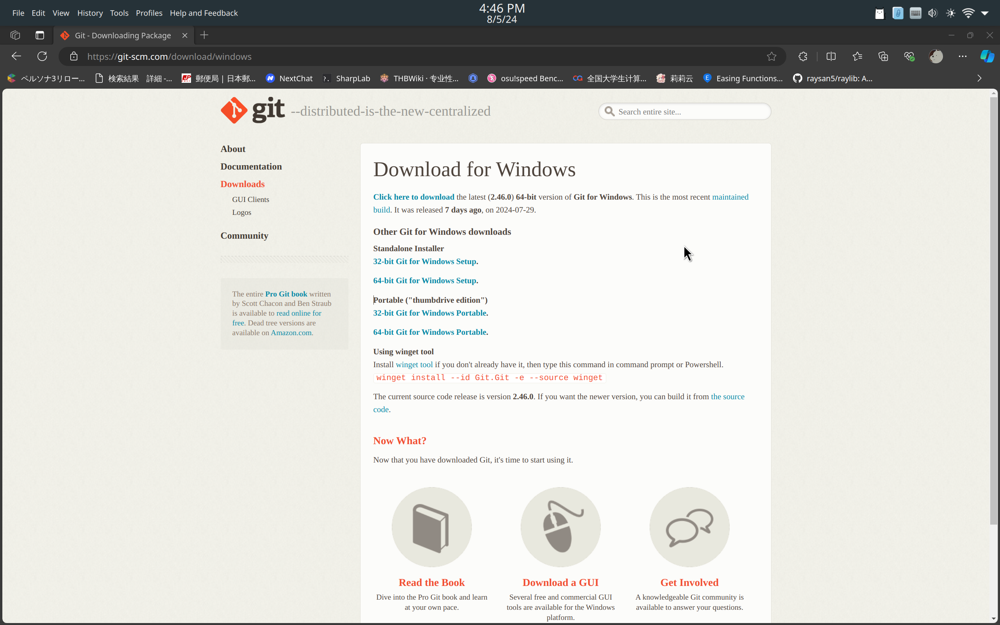
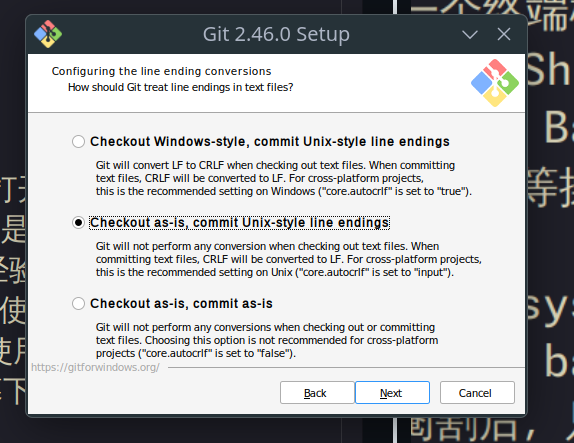
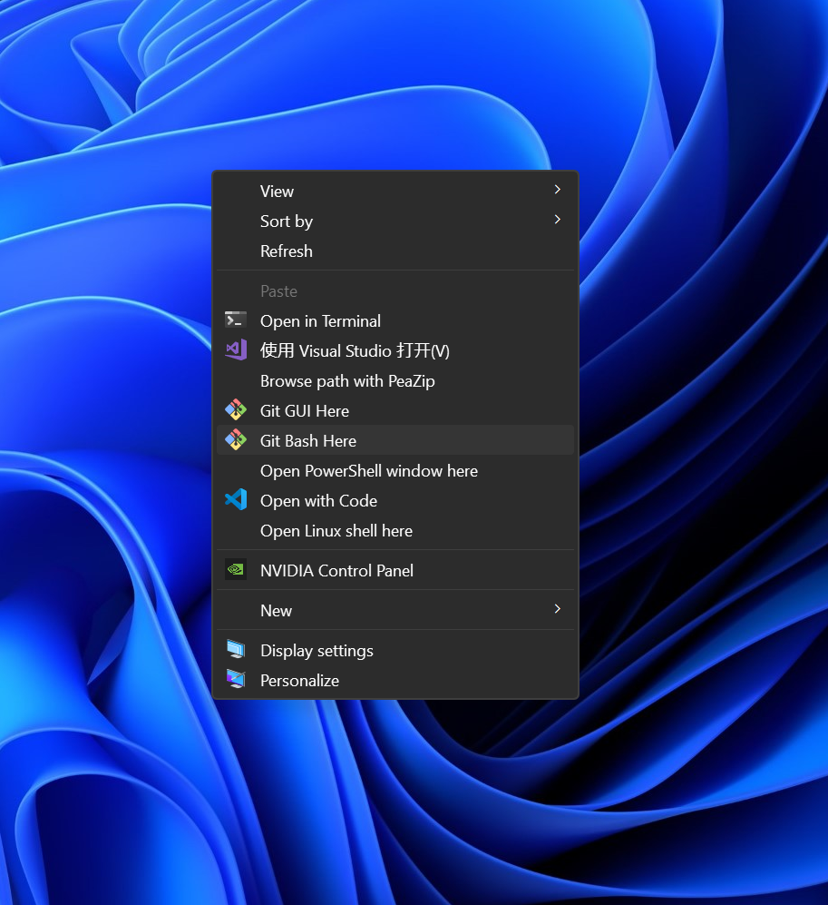

暑假不发霉手册
作者栏 （排名不分先后）
计算机与通信工程学院 王思博
计算机与通信工程学院 唐德斌
前言
本软件仅供学习交流如作他用，如做商用与科研，请请示团队，所承受的法律责任一概与作者无关。
学习路线是笔者本身经历，对于具体问题需要具体分析
Markdown语法（市面上有很多编辑器，笔者这里使用的是Typora）
Markdown 基本语法 | Markdown 官方教程，这里非常详细的记录了markdown常用的各种语法，本文作为介绍目标，只指出作者认为使用得多的一部分。
- 创建不同级标题
markdown语法创建标题只需要输入
#+space(空格)，一个#表示一级标题，两个#，即##，表示二级标题，以此类推，几个#就是几级标题。演示如下
源代码
# 一级标题 ## 二级标题 ## 三级标题一级标题
二级标题
三级标题
演示结束
强调语法
粗体 (Blod)
要加粗文本，请在单词或短语的前后各添加两个星号
**，效果如标题。斜体（Italic)
要用斜体显示文本，请在单词或短语前后添加一个星号
*，效果如标题。引用
要创建块引用，请在段落前添加一个
>符号。演示如下
源代码
> 东北大学计算机与通信工程学院东北大学计算机与通信工程学院
演示结束
创建列表
由于篇幅限制，笔者这里只介绍了有序列表。同样，对于其他用法请参考文处给出的网页。
要创建有序列表，请在每个列表项前添加数字并紧跟一个英文句点。数字不必按数学顺序排列，但是列表应当以数字 1 起始。
演示如下
源代码
1. First item 2. Second item 3. Third item 4. Fourth itemFirst item
Second item
Third item
Fourth item
演示结束
代码块的使用
用三个 `，即 ```` `，输入车便可以创建代码块，这一点在大一上的代码学习中有很大作用，以下代码为笔者展示C++的第一段程序
#include <iostream> int main(){ std::cout<<"Welcome to Northeast University at Qinhuangdao!"; return 0; }TIPS：
markdown的分享就结束了，但是作为一款功能强大的编辑语言，更多的功能在开头的文档等你探索。
笔者推荐的软件有：
地址： Typora
Vscode
-----以Vscode配置C++为例
Github链接与使用
数学建模相关
b站：数学建模老哥
b站：清风数学建模
以上两个是b站名气最高的数学建模讲解，如有需要软件，这些视频简介中都有获取方式
计算机类篇
入门
声明
笔者也是个蒟蒻，就个人的粗糙经历来给学弟学妹们浅谈一下。糕手很多，欢迎热爱算法的有志之士加入NEUQ-ACM俱乐部。
语言
语言的学习是基础的，也是最快的，初学
C++可能有点门槛，但语言之间的共性会使得后续其他语言的学习更容易，所以请打开编辑器，从Hello，world开始吧！#incloud <bits/stdc++.h> using namespace std; int main(){ cout<<"Hello,World!"; return 0; }
怎么学
一切以实操为基础，你可以通过啃书，书上有很多细节和样例，但一定要理解之后自己手打一遍。
关于入门看什么书，但从语言来说，你们的教材是谭浩强，但个人不推荐，可以试试C++ Primer和C++ Primer Plus（tb/pdd直接搜，出来的白皮封面大抵就是了，买来可别堆灰哦）
语言的学习很快，具体的语法也是错综复杂，但在算法领域大多都用不到，不必偏执.
算法
学算法前先学会打暴力，如果学会了打暴力，那么恭喜，你已经超过大部分人了，可以尝试在蓝桥杯中拿个省一
怎么学
入门和学习在网上有很多资源，包括
b站，csdn，博客园，acwing等等都有教学也有专门的算法竞赛书籍，洛谷的**《深入浅出程序设计竞赛》和清华的《算法竞赛入门经典》**等等
基础的算法入门很快，而做题是需要人类智慧的。
网上有很多OJ，新手建议
洛谷和acwing，他们也有入门题单等等。刷题量差不多了，洛谷能看懂绿题和蓝题的题解，掌握了基础的算法（二分，DFS，BFS，动态规划，树状数组，线段树，并查集，二分图......）之后，就可以开始打一些网上的比赛了，牛客，洛谷，leetcode，codeforces，atcoder等平台都可以去打，在打比赛中更能锻炼自己的算法思维和码力。
至于进阶阶段的算法学习，acwing有提高和进阶的课程，也有一个网站可以参考学习OI Wiki - OI Wiki (oi-wiki.org)
至于拿奖，大一上除了个别OI爷有实力能直接打XCPC，暂时没有学校认定能加分的算法竞赛，不过有ACM的招新赛，欢迎大家在暑假以及开学后这段时间迅速入门C++，学会基本的暴力和解决问题的能力就能成为我们ACM俱乐部预备队的一员了。
不过大一下有很多比赛，希望大家好好沉淀，打几个比赛把科创分加满。
电子信息类篇
软件学习声明见前言，如做商用与科研，请请示团队
编程软件：Keil
b站：STM32入门教程-2023版 细致讲解 中文字幕_哔哩哔哩_bilibili
在简介中，有详细的物料清单和Keil的下载与破解方式。keil对应的单片机有：51单片机
其中51单片机涉及对寄存器操作，stm32涉及较多微机原理与模电数电，编程知识，虽然是最重要的单片机，但并不是初学者最友好的。
优点：价格极其低廉 缺点：学习成本高昂
编程软件：Arduino IDE
推荐新手入门uno r3,这款单片机价格便宜，可玩性强，重点是不像stm32一样涉及底层硬件知识，可以在学习C++的同时使用C语言进行编写。
优点：价格相对低廉，学习成本相对低廉，不需要软件破解 缺点：体积相对较大
单片机类型：micro:bit
地址：让我们开始编程吧 | micro:bit (microbit.org)
micro：bit最为最简单的单片机，在英国作为青少年教学单片机，在浙江作为技术选考教学单片机，使用python编程，具有代码编写简单，但是与后续的C++学习有一定的编程语言冲突
优点：学习成本极其低廉（python非常好学） 缺点：价格极其昂贵
电路仿真软件：Multisim
地址：Multisim--软件简介及安装教程（含Multisim14安装包资源）-CSDN博客
由于是美国的软件，需要破解操作，安装与破解方法在上述网页
电路仿真软件&PCB绘制软件：嘉立创pro
地址：嘉立创pro
唯一真神，免费又好用。
什么是 Git
你在任何地方都可以找到这样一句话
Git 是一个分布式版本控制系统，由 Linus Torvalds 于 2005 年创建。Git 是一个免费开源的软件，可以在任何操作系统上运行。
这是正确的，但是作为一个新手来说，这句话可能并不是很容易理解。你不知道什么叫“分布式”，“版本控制系统”又是什么意思。甚至，你连 Git 有什么作用都不知道。
所以，让我们从一个简单的例子开始，来看看 Git 是如何工作的。
一个简单的例子
假设我们有一个项目，通常来说，一个项目就是一个文件夹，里面有很多文件。这些文件是项目所需的代码，构建脚本，文档等等一切相关的东西。
现在来看这个项目，这是一个 C# 项目，你不需要了解 C#，只需要知道这是一个项目就可以了。
现在打开 Program.cs ，这是一个 C# 项目的入口文件，里面有一个简单的代码：
Console.WriteLine($"Sum from 1 to 100 is {SumFrom1ToN(100)}");
int SumFrom1ToN(int n)
{
int sum = 0;
for (int i = 1; i <= n; i++)
{
sum += i;
}
return sum;
}
你一看就知道，这是一个计算从 1 加到 100 的和的程序。你很好奇你的前辈为什么跟个弱智一样要手动从 1 加到 100。因为学过小学的都知道使用高斯公式就可以算出来，于是你决定进行修改：
Console.WriteLine($"Sum from 1 to 100 is {SumFrom1ToN(100)}");
int SumFrom1ToN(int n)
{
return n * ((n + 1) / 2);
}
然后把代码提交到了项目中。
不久，测试气冲冲地跑过来给了你一巴掌，因为(n + 1)是奇数时，结果会出错。现在需要fallback到原来的代码，但是不巧的是，没人记得原来的代码是什么样的了。
这时候，Git 就派上用场了。
Git 的作用是记录项目的历史，你可以在任何时候回到过去，查看项目的历史状态。这就好比是一个时间机器，你可以随时回到过去，查看项目的状态。每个状态被称为一个commit。当所有状态都被记录下来，你就可以随时回到任何一个状态。就不会出现像上面的情况了。
有人说，那我直接复制一份项目不就行了吗？实在行我就手动一条一条地改回去。这样不就可以了吗？
先别急，版本控制只是 Git 最基础的一个功能，但是 Git 的功能远远比这强大。最重要的功能是协同工作。
commit的实质是一个patch，它记录了你对项目的哪些文件删除了哪些行，增加了哪些行。
比如，上文中你提交的代码的commit是这样的：
diff --git a/Program.cs b/Program.cs
index c677648..1d522bd 100644
--- a/Program.cs
+++ b/Program.cs
@@ -3,12 +3,5 @@ Console.WriteLine($"Sum from 1 to 100 is {SumFrom1ToN(100)}");
int SumFrom1ToN(int n)
{
- int sum = 0;
-
- for (int i = 1; i <= n; i++)
- {
- sum += i;
- }
-
- return sum;
+ return n * ((n + 1) / 2);
}
在 markdown 渲染下，你应该能清楚的理解我们所做的一切，修改发生在Program.cs，我们删除了 int sum = 0; 到 return sum; 这段代码，增加了 return n * ((n + 1) / 2); 这段代码。虽然还有些东西你看不懂，但是不要紧，我们后面会讲到。
这段patch可以被应用到任何一个拥有相同文件的项目上，而不仅仅是你的项目。当应用patch时，Git 会自动匹配相应的文件和代码行，然后应用patch。
当你的同伴在修改了项目的其他代码，比如在一开始加了一条Console.WriteLine("Hello, world!")，但是只要被应用patch的代码没有冲突，你的修改就可以被应用到项目上。
这就是 Git 的强大之处，它可以让你和你的同伴协同工作，而不会出现代码丢失。
至于冲突发生的时间，冲突的解决，我们后面会讲到。
接下来应该让你亲手体验一下 Git 的强大之处了，让我们准备安装 Git 吧。
安装 Git
前文提到，Git可以在任何操作系统上运行。那么，本文将讲解在 Windows, Linux，以及 macOS 上如何安装 Git。
安装的部分大家跳转到适合自己操作系统的部分即可。
Windows
Windows 下安装Git稍微麻烦一些，因为Git本身是一个命令行工具，而Windows下的用户对命令行的使用并不是很熟悉，同时Windows下的命令行工具也跟垃圾一样难用。不过如果你会一点点命令行，并且有使用包管理器，你可以跳转到使用包管理器安装的部分。其他人就别看了，直接去手动安装部分吧。
需要说明的是，使用包管理器和手动安装，都是使用相同的软件来源，只是安装方式不同。因此效果是一样的。
使用包管理器
如果你有使用 winget 包管理器，那么安装 Git 就像和在 Linux 下安装软件一样简单。Windows下有很多种包管理器，下面介绍两种最常见的包管理器winget 和 scoop上安装Git。
使用 winget
使用以下命令安装 Git：
winget install --id Git.Git -e --source winget
使用 scoop
使用以下命令安装 Git：
scoop install git
手动安装
前往Git for Windows官网。你应该会看到和下图类似的页面：

现在，你需要根据你的机器选择合适的架构1。对于大多数电脑用户来说，尤其是对于 Windows 10及以上的用户，选择64-bit即可。这些操作系统都是64位的。只要你的电脑不是十几年前的，一般都是64位的。
不过，即使你不知道自己的电脑是什么架构，也不用担心。Git官网自动帮你检测了你的电脑架构，你只需要点击巨大的Download for Windows标题下的Click here to download超链接即可。
不同的架构使用不同的CPU指令集，因此选择错误的架构会导致Git无法运行。
下载完成后，双击下载的安装包，打开安装文件，你需要在下面几个页面注意一下选项，其他地方一路Next即可。一定要先看完再安装，不然后悔莫及。
我的图片是在Linux下使用Wine打开的，所以某些字体可能会有点问题，但是不影响理解。
添加 Git Bash 到 Windows Terminal

勾选倒数第二个选项(New) Add a Git Bash Profile to Windows Terminal。前面说过，Git 是一个命令行工具，而 Git Bash 是一个包含了Git的shell。这个选项会把 Git Bash 添加到 Windows Terminal 中，这样你就可以直接在 Windows Terminal 中使用 Git Bash 了。
Shell2 是一个命令行解释器，它是一个程序，用于解释用户输入的命令，并执行这些命令。Windows下的命令行解释器是cmd和Powershell，而Git Bash是一个基于bash的Shell。
我们使用 Windows Terminal 是因为它是一个终端模拟器，可以同时打开多个终端，而且可以在一个窗口中同时打开不同的Shell。这样，你就可以在一个窗口中同时使用cmd，Powershell，Git Bash等Shell了。同时，Windows Terminal也能更好地支持复制粘贴等操作。
更准确地说，Git Bash是一个阉割版的 msys2，msys2和cygwin都是在Windows上提供类Unix环境的软件。bash是Unix上最常用的Shell之一。所以，Git Bash就是一个阉割后，只安装了Git和bash的msys2。
选择默认编辑器

这个选项是选择你的默认编辑器。Git 会在一些情况下打开一个编辑器。大多数 Unix 用户都使用Vim/Neovim作为编辑器。但是，如果你不会/根本不知道Vim，请千万不要使用Vim。根据我的经验来看，大多数用户进入Vim后都不知道怎么退出。所以，请选择你在外部使用的编辑器，比如VS Code。如果没有，建议安装一个。实在不写可以使用Nano，这也是一个命令行的编辑器，但是它的操作都傻瓜式地写在屏幕下面了。
选择默认换行符

你可能听说过 Unix 系统使用\n作为换行符，Windows 使用\r\n作为换行符。这个选项就是选择你的默认换行符。请一定Checkout as-is, commit Unix-style line endings即可。这个选项会在你检出代码时，使用Unix风格的换行符，提交代码时，使用Unix风格的换行符。否则，你在提交代码的时候很可能产生一大堆更改，因为换行符不同。
启用软链接
 把第二个选项
把第二个选项Enable symbolic links勾选上。
软链接是一种特殊的文件，它指向另一个文件。软链接在Windows下叫做快捷方式。软链接在Unix下有两种，一种是符号链接，另一种是硬链接。符号链接是一种特殊的文件，它指向另一个文件。硬链接是一个文件的另一个名字。软链接在Windows下叫做快捷方式。这个选项是启用符号链接，这样你就可以在Git中使用软链接了。后面我们会稍微提到软链接，现在你你不许要知道这是什么。
接下来你就可以一路Next了。
安装完成后，在任意文件夹中按住shift，右键点击鼠标，你会看到在此处打开 Git Bash或者Open Git Bash here。点击这个选项，你就可以在当前文件夹中打开 Git Bash 了。

你也可以使用Windows Terminal，请先按照以下视频添加Git Bash的配置。
Linux
跳转到你的发行版的部分，按照你的发行版安装即可。
Arch Linux
sudo pacman -S git
Debian/Ubuntu
sudo apt install git
Fedora
sudo dnf install git
openSUSE
sudo zypper install git
Gentoo
自己编译去吧。
macOS
macOS 是基于 Unix 的操作系统，因此安装 Git 就像在 Linux 下安装软件一样简单。不过macOS不自带有包管理器，因此你需要自己安装一个包管理器。这里推荐使用 Homebrew。
使用 Homebrew
brew install git
结束
安装完成后，你可以打开终端，输入git --version，然后回车，看到类似以下输出，说明安装成功：
caiyi@archlinux ~> git --version
git version 2.45.2
下一讲，我们将讲解如何配置 Git，以及简要介绍命令行和shell的基本操作。
配置 Git及简要的命令行教程
配置 Git
首先按照上节课教你的方法打开终端或者 Git Bash。确保你能够从终端访问到git后，把这个窗口放在一边。
我们需要配置一些基本信息，包括：
- 你的名字，一般是真实姓名，使用英文
- 你的邮箱，如果要使用 GitHub，这个邮箱必须和你的 GitHub 账号绑定
- SSH 密钥
让我们先从简单的来，配置你的名字和邮箱。
配置名字和邮箱
配置名字
在命令行中输入以下命令：
git config --global user.name "<你的名字>"
姓名一定要用双引号括起来，否则空格后的内容会被忽略。
例子：
git config --global user.name "Caiyi Shyu"
配置邮箱
在命令行中输入以下命令：
git config --global user.email "<你的邮箱>"
例子：
git config --global user.email "cai1hsu@outlook.com"
如果不小心输错了，可以再次输入命令进行更改。配置完成后，可以通过以下命令查看配置是否成功：
git config --global user.name
git config --global user.email
在我的机器上，输出如下：
caiyi@archlinux ~> git config --global user.name
Caiyi Shyu
caiyi@archlinux ~> git config --global user.email
cai1hsu@outlook.com
你的输出应该和你输入的一样。
我们在配置的时候都添加了--global选项，这意味着你在这台电脑上的所有仓库都会使用这个名字和邮箱。
在提交记录中，这个名字和邮箱会被记录下来，所以请确保你的名字和邮箱是正确的。
例如，在一个git仓库中，使用git log可以查看提交记录，其中有一个字段是Author，这个字段就是你的名字和邮箱。
例子：
Author: Caiyi Shyu <cai1hsu@outlook.com>
Date: Wed Jul 31 16:54:32 2024 +0800
fix click to expand on touch devices
commit 77d64e0c3d593d4b912a6fc8d2f1e16a9e46e9b8
配置 SSH 密钥
当你访问在远程的仓库时，你需要凭证来证明你具有访问权限。在以前，代码托管平台允许你使用用户名和密码来访问仓库。但是现在，这种方式已经被淘汰了，因为它不够安全。
SSH 使用非对称加密来保护你的数据。在这种加密方式中，有两个密钥：公钥和私钥。公钥是公开的，任何人都可以看到。私钥是私有的，只有你自己知道。使用一种密钥加密，则必须使用相配对的另一种密钥解密。除此之外，密钥无法被暴力破解，因为它的长度太长了。
SSH 密钥有不同算法，常用的有 RSA 和 ED25519。任选一种即可。
生成 SSH 密钥需要邮箱，请务必使用和上面一样的邮箱。
回到终端，输入以下命令：
ssh-keygen -t <算法> -C "<邮箱>"
例子:
- RAS 算法
ssh-keygen -t rsa -b 4096 -C "cai1hsu@outlook.com"
- ED25519 算法
ssh-keygen -t ed25519 -C "cai1hsu@outlook.com"
注意！请不要复制我的例子，把例子中的邮箱替换成你的邮箱。
输入命令后，直接一路回车，直到你看到和以下内容相似的完整的输出：
Generating public/private ed25519 key pair.
Enter file in which to save the key (/home/codespace/.ssh/id_ed25519):
Created directory '/home/codespace/.ssh'.
Enter passphrase (empty for no passphrase):
Enter same passphrase again:
Your identification has been saved in /home/codespace/.ssh/id_ed25519
Your public key has been saved in /home/codespace/.ssh/id_ed25519.pub
The key fingerprint is:
SHA256:5SUADhuC/DSS66Zrzyj1Jqn6FMiQPv3ZAJUAYgjK940 your_email@example.com
The key's randomart image is:
+--[ED25519 256]--+
|*++.+.o.. |
|B= +.* . |
|+.=oo . o . |
|+oo.o o o o |
|o+.. E .S . |
| oo.. + |
|o..o o . |
|oo= o |
|B=o= |
+----[SHA256]-----+
看到这个输出，说明你的 SSH 密钥已经生成成功了。请务必注意这个页面的输出不能分享给任何人。
不过你目前仍然不能通过 SSH 访问远程仓库，因为你的公钥还没有添加到远程仓库。在后面讲解GitHub工作流的章节中，我们会讲解如何添加公钥到远程仓库。
接下来，我们来学习一下命令行的基本操作。
认识命令行
本页内容对于新手来说可能有些难度，你不需要理解所有内容，只需要确保你能够看懂命令行，并使用命令行来完成常见工作即可。
请认真对比命令行的内容和我对内容含义的解释，确保你理解命令行界面的含义。 以下是三种常见的命令行界面，分别是：
- Git Bash on Windows
Caiyi Shyu@archlinux MINGW64 ~
$ git --version
- Bash on Unix
[caiyi@archlinux ~]$ git --version
- Fish on Unix
caiyi@archlinux ~> git --version
它们都含有以下几个部分：
Caiyi Shyu@archlinux或者caiyi@archlinux~$或者 Fish 中的>git --version
第一个部分是用户名和主机名，格式为<用户名>@<主机名>。
用户名和主机名
在上面的例子中，用户名是Caiyi Shyu或者caiyi，主机名是archlinux。主机名是你的电脑的名字，在你操作系统的设置中可以找到并进行更改。
工作目录
第二个部分是工作目录，格式为<工作目录>。在上面的例子中，工作目录是~。~表示用户的home目录，也就是你的用户目录。在 Windows 中，用户的家目录一般是C:\Users\<用户名>。在 Unix 中，用户的家目录一般是/home/<用户名>。
你也可以在终端中输入pwd命令来查看当前工作目录。
以下是在 Windows 和 Unix 中的输出：
- Git Bash on Windows
/c/Users/Caiyi Shyu/
看起来和 Windows 下常见的路径有些不一样。这是因为 Git Bash 使用 Unix 风格的路径。上面的路径等价于C:\Users\Caiyi Shyu\。注意，在Git Bash中，只能使用Unix风格的路径，并且路径分隔符是/而不是\。
- Bash or Fish on Unix
/home/caiyi
这是完整目录，当前用户的home就等价于~
当我进入当前目录下的Desktop目录时，工作目录会变成~/Desktop。
就像下面一样：
- Git Bash on Windows
Caiyi Shyu@archlinux MINGW64 ~/Desktop
$
- Bash on Unix
[caiyi@archlinux ~/Desktop]$
- Fish on Unix
caiyi@archlinux ~/Desktop>
现在输入pwd命令，你会看到输出是/home/caiyi/Desktop(Linux和macOS)或者/c/Users/Caiyi Shyu/Desktop(Windows)。
需要说明的是，shell中的工作目录通常为了显示简洁，可能会省略一部分内容。如果你不清楚当前的工作目录，请随时pwd命令来查看。
提示符
第三个部分是提示符，格式为<提示符>。在上面的例子中，提示符是$或者>。提示符告诉你终端已经准备好接受你的输入了。
命令
第四个部分是命令，格式为<命令>。在上面的例子中，命令是git --version。这个命令告诉终端你想要执行git这个程序，并且传递了一个参数--version给这个程序。
命令是你和shell交互的方式。当你输入完命令后，按下回车键，shell会解释1并执行这个命令。
解释是指shell会根据你输入的命令，找到对应的程序，并且传递参数给这个程序。程序会根据参数执行相应的操作。
命令分为两种：内建命令和外部命令。内建命令是shell自带的命令，比如cd，pwd，exit等。外部命令是你安装的程序，比如git，ls，cat等。
Shell 在寻找命令时，会先在内建命令中查找，如果找不到，就会在外部命令中查找。所以，当你尝试执行一个不存在的命令时，shell会提示你command not found，就像下面这样：
[caiyi@archlinux Desktop]$ firetruck you
bash: firetruck: command not found
需要说明的是，只有第一个单词是命令，比如上面的firetruck和git，shell 会去寻找一个叫firetruck或者git的程序。后面的一切都是参数，shell 会把这些参数传递给这个程序。
例如，在执行git --version时，--version就是参数。程序根据不同的参数执行不同的操作。
还记得main函数的完整形式？通过argv向量，程序就可以访问到这些参数。
// 省略了 envp 参数，避免让新手头大
int main(int argc, char *argv[]) {
// argc 是参数的数量
// argv 是参数的数组
}
让我们写一个简单的程序来获取所有的参数。
#include <stdio.h>
int main(int argc, char *argv[])
{
for (int i = 0; i < argc; i++)
{
printf("argv[%d]: %s\n", i, argv[i]);
}
return 0;
}
编译后，我们使用以下参数运行这个程序，可以得到以下输出：
caiyi@archlinux ~> ./argv_demo --version
argv[0]: ./argv_demo
argv[1]: --version
可以看到，--version这个参数被传递给了这个程序。但是值得注意的一点是，第一个参数并不是--version，而是程序的名字。这是因为，程序可能在运行时希望获得自己的完整路径，通过将当前工作目录和程序名拼接起来，程序就可以获得自己的完整路径。
认识路径
以这个路径为例：/home/caiyi/Desktop。
路径表示文件系统中的位置，既可以是文件夹，也可以是文件。
路径分为绝对路径和相对路径。在Unix风格的路径中，判断一个路径是绝对路径还是相对路径很简单：如果路径以/开头，那么这个路径就是绝对路径，否则就是相对路径。
绝对路径是从根目录开始的路径，相对路径是相对于当前工作目录的路径。
看到一个路径，请你的大脑将这个路径按'/'分割成一个数组：['home', 'caiyi', 'Desktop']。
除最后一个元素外，每个元素都是一个文件夹。最后一个元素既可以是文件夹也可以是文件。但是如果最后一个元素后面还跟了一个/，那么这个元素就是一个文件夹。
上面的例子中，由于是一个绝对路径，所以它的含义是
根目录下的home文件夹下的caiyi文件夹下的Desktop文件夹（或文件夹）。
下面来看一个相对路径的例子：repos/manual/
这个路径是相对路径，因为它不是以/开头的。这个路径的含义是当前工作目录下的repos文件夹下的manual文件夹2。
前面说了，如果最后一个元素后面还跟了一个/，那么这个元素就是一个文件夹。
特殊的路径
前面介绍了/和~这两个特殊的路径。它们分别表示根目录和用户的家目录。
/是根目录，是文件系统的最顶层。在 Unix 系统中，所有的文件和文件夹都是从根目录开始的。
~是用户的家目录，是用户的默认工作目录。在 Unix 系统中，用户的家目录一般是/home/<用户名>。
下面再介绍两个特殊的路径：.和..。
.表示当前工作目录，是一个相对路径。例如，./repos表示当前工作目录下的repos文件夹。它就等价于repos。
..表示上一级目录，是一个相对路径。例如，../repos表示当前工作目录的上一级目录下的repos文件夹。
基本命令
从现在开始，你就要像一个程序员一样使用命令行了。在这一节中，我们会学习一些基本的命令。
一般来说，你使用的命令只有两类：
- 更改工作目录的命令
- 执行程序或操作
更改工作目录的命令
更改工作目录的一般使用cd命令。cd是change directory的缩写。
cd 后既可以接绝对路径，也可以接相对路径。
使用绝对路径：
cd /home/caiyi/Desktop
现在你的工作目录就变成了/home/caiyi/Desktop。输入pwd命令，你会看到输出是/home/caiyi/Desktop。同时在提示符附近也可以看到当前工作目录。
再使用相对路径：
cd repos/manual
现在你的工作目录就变成了/home/caiyi/Desktop/repos/manual。输入pwd命令，你会看到输出是/home/caiyi/Desktop/repos/manual。
通常来说，使用相对路径更方便，因为你不需要记住绝对路径。要进入当前工作目录下的一个文件夹，只需要输入cd 文件夹名即可。
现在来看看..和.的用法。
cd ..
输入这个命令后，你的工作目录就变成了原来工作目录的上一级目录。输入pwd命令，你会看到输出是/home/caiyi/Desktop/repos。
cd .
输入这个命令后，你的工作目录不会发生变化。因为.表示当前工作目录。虽然.在现在看起来好像没什么用，但是在某些情况下，.是非常有用的。后面我们会提到。
执行程序或操作
在命令行中，你可以执行程序或者操作。这些程序或操作可以是内建的，也可以是外部的。
内建命令
pwd
pwd是print working directory的缩写。这个命令会输出当前工作目录的绝对路径。
样例输出：
pwd
输出的内容是/home/caiyi/。
ls
ls是list的缩写。这个命令会列出当前工作目录下的所有文件和文件夹。
样例输出：
LICENSE book/ book.toml src/
这是当前本仓库的根目录的输出。你可以看到有四个文件和文件夹。文件夹都以/结尾，其他的都是文件。
ls命令还有一些选项，常用的有-l和-a。
-l选项会输出更详细的信息，包括文件的权限，所有者，大小，修改时间等。
例如：
caiyi@archlinux ~/r/manual (use-git)> ls -l
total 16
-rw-r--r-- 1 caiyi caiyi 1064 Aug 5 14:57 LICENSE
drwxr-xr-x 7 caiyi caiyi 4096 Aug 5 19:03 book/
-rw-r--r-- 1 caiyi caiyi 148 Aug 5 15:29 book.toml
drwxr-xr-x 4 caiyi caiyi 4096 Aug 5 18:40 src/
-a选项会输出所有的文件和文件夹，包括隐藏的文件和文件夹。隐藏的文件和文件夹以.开头。
caiyi@archlinux ~/r/manual (use-git)> ls -a
./ ../ .git/ .github/ .gitignore LICENSE book/ book.toml src/
更多的用法请上网查询。
rm
rm是remove的缩写。这个命令会删除文件或者文件夹。
删除文件
直接输入rm，然后将文件路径作为参数传递给rm。
例如
rm LICENSE
rm ./LICENSE
rm ../LICENSE
删除文件夹
如果一个文件夹不为空，你不能直接删除它。
但是有一个简单的方法可以删除一个文件夹及其所有内容，就是使用-r选项。r是recursive的缩写，表示递归。
rm -r book/
这个命令会删除book文件夹及其所有内容。
网上有很多人开玩笑的让新手输入sudo rm -rf /这个命令，这是相当危险的。它会递归删除根目录下的所有文件和文件夹。包括boot分区和所有数据资料。所以，请不要输入这个命令。
同时，在删除当前文件夹下所有文件时，有些人喜欢用rm -rf ./，建议不要使用这种方法，而是输入完整的文件夹名字，因为它和上面的命令相似，如果你输入错误，就会发生灾难性的后果。
删除多个文件
你可以一次删除多个文件。
rm LICENSE book.toml
这个命令会删除LICENSE和book.toml这两个文件。
mv
mv是move的缩写。这个命令可以移动文件或者文件夹。
mv LICENSE book/
这个命令会将LICENSE文件移动到book文件夹下。
mv book/ book-old/
这个命令会将book文件夹重命名为book-old。Unix下没有专门的重命名命令，重命名就是移动。
cp
cp是copy的缩写。这个命令可以复制文件或者文件夹。其语法和mv类似。这里不再赘述。
cp LICENSE book/
把LICENSE文件复制到book文件夹下。
mkdir
mkdir是make directory的缩写。这个命令可以创建文件夹。
mkdir new-folder
这个命令会在当前工作目录下创建一个叫new-folder的文件夹。
创建多级文件夹
mkdir -p new-folder/sub-folder
这个命令会创建一个叫new-folder的文件夹，然后在这个文件夹下创建一个叫sub-folder的文件夹。
touch
touch命令会创建一个空文件。
touch new-file
这个命令会在当前工作目录下创建一个叫new-file的文件。
外部命令
常用的内部命令就以上这几个，它们覆盖了你在日常工作中的大部分需求。但是有时候你需要使用一些外部命令。
cat
cat是concatenate的缩写。这个命令会输出文件的内容。很多人认为cat是一个内建命令，但是它实际上是一个外部命令。
cat LICENSE
这个命令会输出LICENSE文件的内容。
例如：
caiyi@archlinux ~/r/manual (use-git)> cat LICENSE
MIT License
Copyright (c) 2024 NEUQ-CS
Permission is hereby granted, free of charge, to any person obtaining a copy
of this software and associated documentation files (the "Software"), to deal
in the Software without restriction, including without limitation the rights
to use, copy, modify, merge, publish, distribute, sublicense, and/or sell
copies of the Software, and to permit persons to whom the Software is
furnished to do so, subject to the following conditions:
The above copyright notice and this permission notice shall be included in all
copies or substantial portions of the Software.
THE SOFTWARE IS PROVIDED "AS IS", WITHOUT WARRANTY OF ANY KIND, EXPRESS OR
IMPLIED, INCLUDING BUT NOT LIMITED TO THE WARRANTIES OF MERCHANTABILITY,
FITNESS FOR A PARTICULAR PURPOSE AND NONINFRINGEMENT. IN NO EVENT SHALL THE
AUTHORS OR COPYRIGHT HOLDERS BE LIABLE FOR ANY CLAIM, DAMAGES OR OTHER
LIABILITY, WHETHER IN AN ACTION OF CONTRACT, TORT OR OTHERWISE, ARISING FROM,
OUT OF OR IN CONNECTION WITH THE SOFTWARE OR THE USE OR OTHER DEALINGS IN THE
SOFTWARE.
echo
echo命令会输出参数。
echo "Hello, World!"
这个命令会输出Hello, World!。
其他命令
对于其他命令，只要它在环境变量PATH中，你就可以直接使用。使用echo $PATH，你可以看到PATH中包含了哪些路径。这些路径就是系统用来查找命令的路径。在这些路径下的可执行文件都可以直接使用。
我们使用的git命令就是一个外部命令。如果是 Unix 系统，git 在/usr/bin或者/usr/local/bin中会有一个链接指向真正的可执行文件。在 Windows 系统中，git 会被安装到C:\Program Files\Git\bin中或者你自己指定的路径。
如果你不知道一个命令是不是内建命令，你可以使用which命令来查找。
运行任意程序
前面我们讲了运行在环境变量PATH中的程序。但是有时候你需要运行一个不在PATH中的程序。比如你用gcc在当前目录下编译了一个程序，你显然不会先把当前目录加入PATH再运行这个程序。
这时候你可以使用相对路径或者绝对路径来运行这个程序。
对于非当前目录下的程序，你可以使用相对路径或者绝对来运行，例如：
# 使用绝对路径
caiyi@archlinux ~> ~/argv_demo --version
# 使用相对路径
caiyi@archlinux ~> ../tmp/argv_demo --version
对于当前目录下的程序，这时候就需要使用.了。你需要使用./<程序名>来运行这个程序，例如：
caiyi@archlinux ~> ./argv_demo --version
这是为了避免歧义，如果不输入./，这种格式完全符合命令的格式，因此shell会把它当作命令来执行。
权限问题
在 Unix 系统中，程序需要有执行权限（Executable）才能运行。有时你从网上下载了一个二进制文件，你发现你不能运行它，这是因为它没有执行权限。
这时候就需要使用chmod命令来添加执行权限。
chmod +x argv_demo
这样你就可以运行这个程序了。
UNIX的权限分为可读可写可执行三种权限，分别用r，w，x表示。对于文件夹，x表示可以进入这个文件夹。也可以使用三个比特二进制表示：
000
其中第一个比特表示可执行权限，第二个比特表示可写权限，第三个比特表示可读权限。
当权限为0时表示为既不可读也不可写也不可执行。当权限为7时表示可读可写可执行。
链接
在 Unix 系统中，有两种链接：符号链接（也叫软链接）和硬链接。
它们都是一种特殊的文件，它们指向另一个文件。软链接在 Windows 下叫做快捷方式。软链接在 Unix 下有两种，一种是符号链接，另一种是硬链接。符号链接是一种特殊的文件，它指向另一个文件。硬链接是一个文件的另一个名字。
指向意味着，当你访问这个链接时，实际上你访问的是被链接的文件。这样，你可以在不改变文件的情况下，改变文件的位置。同时，你也可以在不占用额外空间的情况下，创建一个文件的副本。
环境变量
环境变量是一种特殊的变量，它们是在操作系统启动时设置的。环境变量是一个键值对。键是环境变量的名字，值是环境变量的值。
对于新手来说，你只需要了解两个环境变量：PATH和HOME。
PATH是一个包含了系统用来查找命令的路径的变量。当你输入一个命令时，系统会在PATH中的路径下查找这个命令。如果找到了，就会执行这个命令。如果没有找到，就会提示command not found。
HOME是用户的家目录。在 Unix 系统中，用户的家目录一般是/home/<用户名>。前面说的~是家的别名是不准确的，事实上，它是HOME环境变量的值。如果你修改了HOME环境变量，~也会随之改变。
你可以使用echo命令来查看环境变量的值。
echo $PATH
'$'符号是一个特殊字符，它表示后面的是一个变量。在这个例子中，$PATH表示PATH环境变量的值。
在 C 语言中的完整main函数的形式是这样的：
int main(int argc, char *argv[], char *envp[]) {
// argc 是参数的数量
// argv 是参数的数组
// envp 是环境变量的数组
}
是的，这才是完整的main函数，它接受3个参数而不是大多数教程中的2个参数。
遍历envp向量即可得到所有的环境变量。环境变量向量可能非常长，因此在这里不再展示。
环境变量以及参数都是父进程在变为子进程时通过exec系统调用让操作系统传递给子进程的。并且argc,argv,envp是子进程主线程线程栈最顶端的元素。
命令的选项
命令的选项也是一种参数，但是它们以-或者--开头。选项可以改变命令的行为。
-选项是单字母的选项，--选项是多字母的选项。
对于某些程序，例如ls，-选项可以合并，比如-a -l可以写成-al。
一般来说，对大部分程序使用-h或者--help选项可以查看帮助信息。
选项分为两种：有参数的选项和无参数的选项。有参数的选项后面需要跟一个参数，无参数的选项不需要。
上面提到的--help就是是无参数的选项。
例如，某款游戏可能接受--fullscreen true这样的选项，--fullscreen是有参数的选项，true是这个选项的参数。但是它们都是命令中的参数。
管道
管道是Unix中较为复杂的概念，在这里我只讲如何使用。
管道的作用是重定向命令的输出。你可以把一个命令的输出作为另一个命令的输入。也可以把一个命令的输出保存到文件中。
重定向到另一个程序的标准输入
echo "Hello, World!" | cat
首先，echo "Hello, World!"会输出Hello, World!。然后，|会把这个输出重定向到cat命令的标准输入。cat会输出这个输入。所以输出还是Hello, World!。
重定向到文件
echo "Hello, World!" > hello.txt
这个命令会把echo "Hello, World!"的输出重定向到hello.txt文件中。>是重定向的符号。
现在你可以使用cat命令查看这个文件的内容。
cat hello.txt
重定向到文件的末尾
echo "Hello, World!" >> hello.txt
这个命令会把echo "Hello, World!"的输出追加到hello.txt文件的末尾。>>是追加重定向的符号。
Git 入门
在了解了命令行的基本操作后，我们来尝试使用 Git。这部分的内容是命令和原理结合的，你可以在这里学到 Git 的基本操作和 Git 的工作原理。
获得一个 Git 仓库的方法有两种，一种是“将一个文件夹变成 Git 仓库”，一种是从远程克隆一个 Git 仓库。
将一个文件夹变成一个 Git 仓库
Git 仓库的本质是一个文件夹。所以，我们可以将一个文件夹变成一个 Git 仓库。
你可以输入以下命令，把当前文件夹变成一个 Git 仓库：
git init
或者，你可以输入以下命令，把指定文件夹变成一个 Git 仓库：
git init path/to/folder
Git 仓库和普通文件夹的区别在于，Git 仓库中有一个隐藏的.git文件夹，这个文件夹中存储了 Git 的所有信息，包括所有的git object，ref等。在任何情况下，你都不要应该修改.git文件夹中任何的内容。唯一的例外是.git/config文件，这个文件存储了当前仓库的配置信息，例如远程仓库的地址等。但是你也应该谨慎修改这个文件或者使用git config命令修改配置。
如果你不小心把一个文件夹变成了 Git 仓库1，直接删除.git文件夹就可以了。使用以下命令即可：
去年有人才把整个C盘或者桌面都变成了Git仓库。
rm -rf .git
Git 在操作 Git 仓库时，会递归的从当前文件夹向上查找.git文件夹，直到找到第一个.git文件夹或者到达文件系统的根目录。所以，你可以在任何一个 Git 仓库的子文件夹中使用 Git 命令。当 Git 仓库嵌套时，Git 会使用离当前文件夹最近的.git文件夹。
克隆远程仓库
要从远程克隆仓库首先要确保你具有权限，对于 GitHub，GitLab, Bitbucket等代码托管平台的公开仓库，任何人都具有权限，因此可以直接克隆。对于私有仓库，你需要一个具有读取权限的平台账号，然后将平台账户和你的 SSH 密钥绑定。
具有权限后，就能够克隆仓库了，使用以下命令即可：
git clone https://github.dev/NEUQ-CS/manual.git
记得将仓库地址更换成你想克隆的仓库的地址。克隆结束后，在当前目录下会产生一个与仓库名一致的文件夹，在本例中，是manual。
这个仓库就是你克隆的 Git 仓库。
clone命令还有一些其他参数可以使用
克隆到指定文件夹
在地址后面加上指定路径即可：
git clone https://github.dev/NEUQ-CS/manual.git path/to/repo
注意，仓库里的文件会直接存在你指定的文件夹里面，而不是在你指定的目录里放仓库文件夹。
克隆指定分支
加上参数-b <分支名>即可，例如:
git clone https://github.dev/NEUQ-CS/manual.git -b master
这将指定需要克隆master分支.
需要说明的是，即使你选择了一个分支，整个仓库的所有分支都实质上会被克隆下来，只是克隆完成后位于指定分支。
指定克隆深度
使用--depth <深度>来指定克隆深度：
git clone https://github.dev/NEUQ-CS/manual.git --depth=1
仅克隆主分支上包含最新一个提交的完整仓库，克隆的仓库不含有任何历史记录。不推荐使用，除非你只是为了临时下载代码并且不需要历史记录和其他分支。
查看 Git 仓库的状态
在一个 Git 仓库中，你可以使用以下命令查看当前仓库的状态：
git status
你会看到以下输出：
On branch master
Your branch is up to date with 'origin/use-git'.
Changes to be committed:
(use "git restore --staged <file>..." to unstage)
modified: src/use-git/configure.md
Untracked files:
(use "git add <file>..." to include in what will be committed)
src/use-git/try-git.md
当前在分支master上，你的分支是最新的。Changes to be committed中列出了你修改的文件，Untracked files中列出了你新建的文件。
Git 工作原理
在继续尝试前，我们先来了解一下 Git 的工作原理，你可能已经对上面的输出感到迷惑了。
在一个 Git 仓库的文件夹中，一个文件可能存在以下三种状态的其中一种：
- 未跟踪 Untracked
- 已跟踪 Tracked
- 暂存中 Staged
未跟踪
当你使用 git init初始化一个仓库时，原有的所有文件都是未跟踪。Git 不会管理任何未跟踪的文件，但是这个文件仍然存在于这个文件夹中。不会管理的意思在于，当你通过 git 操作仓库的状态时，未跟踪的文件不会被修改或删除。如果一定会造成修改2，git 会阻止这次操作，直到你解决完冲突。
比如你有一个未跟踪的a.txt，然后你通过切换到另一个分支，合并另一个分支，拉取远程尝试覆盖（其他分支上存在已跟踪的a.txt）这个文件时，Git 会阻止这次操作。
已跟踪
这应该是仓库中大部分文件存在的状态。当你刚远程克隆完一个仓库时，所有文件都处于已跟踪状态。这是显然的，因为只有被跟踪的文件才会被提交到远程服务器。
跟踪未跟踪的文件
要把一个未跟踪的文件变为已跟踪状态的方法是，先添加到暂存区，然后再commit。以下是命令行教程
# 添加a_new_file到暂存区
git add a_new_file
# commit在暂存区的所有文件
git commit -m "add `a_new_file` to this repo"
将已跟踪的文件删除
你可以使用git rm <文件>来删除，这会直接把删除操作直接添加到暂存区，文件系统上的文件也会被删除。它等价于以下操作：
rm an_old_file
git add an_old_file
要取消跟踪一个文件，但希望在文件系统上保留这个文件，使用git rm --cached file
暂存中
准确地说，暂存的不是文件，是操作。通常来说，可以暂存
- 修改 Modify/Update
- 添加 Add
- 删除 delete
- 移动 Move
这几种操作。
当你在文件系统上修改一个文件，然后用git add的时候会暂存一个修改操作到暂存区。
当你在文件系统上添加一个文件，然后用git add的时候会暂存一个添加操作到暂存区。
当你在文件系统上删除一个文件，然后用git add的时候会暂存一个删除操作到暂存区。
当你在文件系统上移动或重命名一个文件，然后用git add的时候会暂存一个移动操作到暂存区。
将操作从暂存区撤出，使用以下命令：
git restore --staged file
对于这些状态的理解，我推荐使用Visual studio code的内置Git功能进行观察，他是Git的一个前端。可以代替手动的命令行，但是，就我个人而言，更会倾向使用命令行，因为这些前端不支持较为复杂的操作。
现在我们再来看这段输出：
On branch master
Your branch is up to date with 'origin/use-git'.
Changes to be committed:
(use "git restore --staged <file>..." to unstage)
modified: src/use-git/configure.md
Untracked files:
(use "git add <file>..." to include in what will be committed)
src/use-git/try-git.md
Changes to be committed部分就是存在于暂存区的文件，当我们使用git commit的时候，就会跟踪并把这些文件添加到git仓库。
Untracked files是前文说过的未跟踪文件，这是因为这个文件才创建，当使用git add来添加时，会在暂存区添加一个添加操作。
代码提交
代码提交使用git commit命令，提交的时候需要一段简短的话描述你的这次修改。同时，你的姓名，邮箱也会被记录在这条commit记录中。
关于如何编写commit信息，我会在后面讲解良好的git使用习惯时讲到。
git commit命令常用的形式有以下两种：
- 将信息作为参数直接提交
git commit -m "<提交信息>"
- 使用代码编辑器编写提交信息
git commit -a
这会打开你在安装时选择的代码编辑器，信息编写完成后，保存关闭即可。
有时候，你觉得提交信息写的不好，打算重写编写提交信息时，可以采用以下命令：
git commit --amend -m "<提交信息>"
或者使用编辑器
git commit --amend -a
这会完全重新提交一次commit并获得不同的commit哈希3，以及时间戳。
还记得 Git 是去中心化这句话吗？使用哈希来描述对象是去中心化的典型特征。哈希是指向去中心化网络中对象的一个指针，具有这个指针就能够访问到这个对象，当没有人持有哈希时，这个对象就视为被删除，但是这个对象本身实际上不能被删除，它仍存在于去中心化网络中。Git 的commit也是，这也就意味着，当你在GitHub上删除一个仓库，分支时，它实际上从未被删除，也不能够被删除。
使用git commit --amend的操作等价于以下操作：
# 保留修改回到上一次提交
git reset --soft "HEAD^"
# 重新提交
git commit -m "<提交信息>"
我个人更喜欢这种方法，因为更为灵活，你可以在重新提交过程中做一些修改。
查看提交历史
使用git log命令可以查看提交历史，这会列出所有的提交记录，包括提交哈希，提交信息，提交时间，提交者等信息。
推送到远程仓库
尽管我还没有教你配置远程仓库，但是我还是会告诉你如何推送到远程仓库。
使用git push命令可以将本地仓库的修改推送到远程仓库。这个命令的形式是：
git push <远程仓库名> <本地分支>:<远程分支>
通常来说，远程仓库名是origin。并且，大多数时候，本地分支和远程分支是一样的，所以可以省略远程分支：
git push origin <分支>
这会将本地分支推送到远程分支，如果远程分支不存在，会自动创建。
有时候，远程分支上包含了你不希望存在的修改，这时候你想用本地分支覆盖远程分支，可以使用-f参数：
git push -f origin <分支>
-f选项会强制推送，这会覆盖远程分支上的所有修改，所以请谨慎使用。如果你把别人的代码或者作业给覆盖了，小心被打。
在推送之前，你需要先确保你具有远程仓库的所有历史记录，如果本地仓库不包含远程仓库存在的一些更改，你就需要先拉取远程仓库的更改。
拉取远程仓库的修改
拉取远程仓库的修改使用git pull命令，这会将远程仓库的修改拉取到本地仓库。这个命令的形式是：
git pull <远程仓库名> <远程分支>:<本地分支>
同样，大多数时候，远程仓库名是origin，远程分支和本地分支是一样的，所以可以省略远程分支：
git pull origin <分支>
这会将远程分支拉取到本地分支，如果本地分支不存在，会自动创建。
git pull命令实际上是git fetch和git merge的组合，git fetch会将远程仓库的修改拉取到本地仓库，但不会应用更改，而是会在一个<远程名>/<分支名>的分支上保存，git merge会将这个特殊分支合并到本地分支。
分支
前面提到了那么多关于分支的内容，但是我还没有告诉你什么是分支。
分支是 Git 的一个重要概念，它是一个指向一个提交的指针。在一个 Git 仓库中，你可以有多个分支，每个分支指向一个提交。默认情况下，你会有一个master1分支。
前几年由于一些政治正确的原因，在GitHub上，主分支被改成了main
分支的意义在于它和其他分支可以并行开发，你可以在一个分支上开发一个新的功能，而不影响其他分支。当你开发完成后，你可以将这个分支合并到主分支上。合并会将当前分支上所有领先于基础分支的patch应用到基础分支上。这就是使用 Git 进行协作开发的原理。
了解了什么是分支，现在我来教你如何管理分支。
查看分支
使用git branch命令可以查看当前本地仓库的所有分支。加上-a参数可以查看所有分支，包括远程分支。
样例输出：
caiyi@archlinux ~/r/manual (use-git)> git branch
fix-ci
fix-format
main
master
* use-git
caiyi@archlinux ~/r/manual (use-git)> git branch -a
fix-ci
fix-format
main
master
* use-git
remotes/origin/HEAD -> origin/main
remotes/origin/fix-ci
remotes/origin/fix-format
remotes/origin/main
remotes/origin/master
remotes/origin/use-git
上面的输出表明，我们当前在use-git分支上，本地仓库中有fix-ci, fix-format, main, master, use-git五个分支，远程仓库中有fix-ci, fix-format, main, master, use-git五个分支。
创建分支
创建分支是创建当前分支的拷贝，因此要先切换到你想要拷贝的分支上，然后使用命令。
创建分支有两种命令：
git checkout -b <分支名>
git branch -m <分支名>
这会创建一个新的分支，并切换到这个分支上。
要创建一个分支但不切换到这个分支上，可以使用以下命令：
git branch <分支名>
切换分支
当两个分支里的文件不一样时，切换分支会修改当前文件系统上的文件，因为切换分支意味着你要切换到另一个分支的文件系统状态。
切换分支使用git checkout命令，这会将当前分支切换到指定分支上：
git checkout <分支名>
删除分支
删除分支使用git branch -d命令，这会删除指定分支：
git branch -d <分支名>
如果分支上有未合并的修改，Git 会拒绝删除这个分支。如果你确定要删除这个分支，可以使用-D参数：
git branch -D <分支名>
合并分支
合并分支有三种方法：
- 合并 merge
- 变基 rebase
- 快进 fast-forward
通常来说，使用merge即可，但是在一些特殊情况下，你可能需要使用rebase。快进是一种特殊的合并，当你的分支是基于基础分支的最新提交时，Git 会直接将基础分支指针指向当前分支指针，这就是快进。
合并分支使用git merge命令，这会将指定分支合并到当前分支上：
git merge <另一个分支>
合并分支会产生一个新的提交commit，这个提交包含了两个分支的所有修改。
变基
变基是一个相对复杂的概念，相对于merge来说，它能够让提交记录更加线性。这是因为，在合并后，分支继承了基础分支，也同时继承了合并分支，同时具有两个父节点。这会使得提交记录变得复杂，也就是更加不线性。
变基与合并不同的地方在于，它不会让分支同时继承两个父节点，而是将合并分支的提交记录放在基础分支的最新提交之后。提供更改的分支不会被继承，因而不会出现两个父节点。
变基使用git rebase命令，这会将指定分支变基到当前分支上：
git rebase <另一个分支>
变基会产生一个新的提交commit，这个提交包含了两个分支的所有修改。
总结
本节课我们学习了 Git 的基本操作，包括将一个文件夹变成 Git 仓库，克隆远程仓库，查看 Git 仓库的状态，提交代码，查看提交历史，推送到远程仓库，拉取远程仓库的修改，分支的创建，切换，删除，合并，变基等操作。
这些操作需要你多加练习，只有多加练习，你才能熟练掌握这些操作。
要练习这些操作，我推荐使用这个网站：Learn Git Branching。使用这个网站时，你只需要先掌握基本操作，以及操作远程仓库的操作，就可以了。对于更加复杂的操作，等你对 Git 有了更深的理解再去尝试。
但更重要的是，你应该多使用 Git 来管理你的代码，这样你才能更好地理解 Git 的工作原理。
下一节课开始，我们将学习如何使用代码托管平台，本教程以 GitHub 为例。